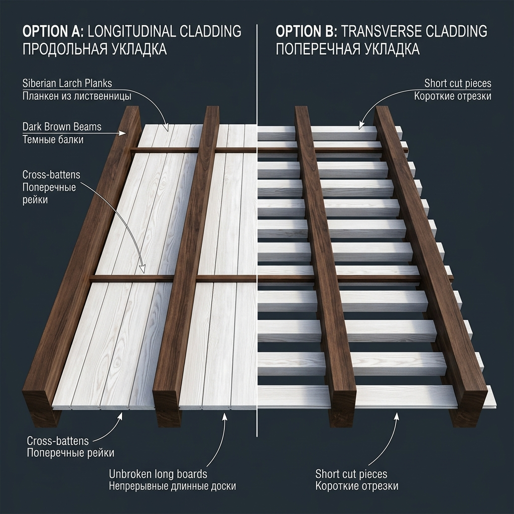
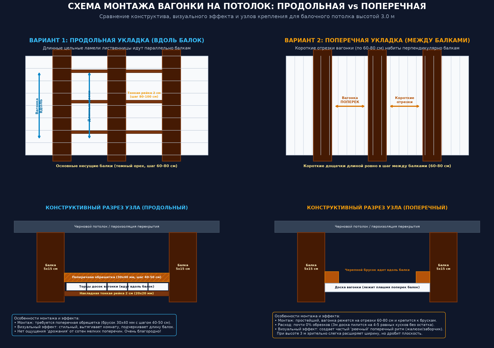
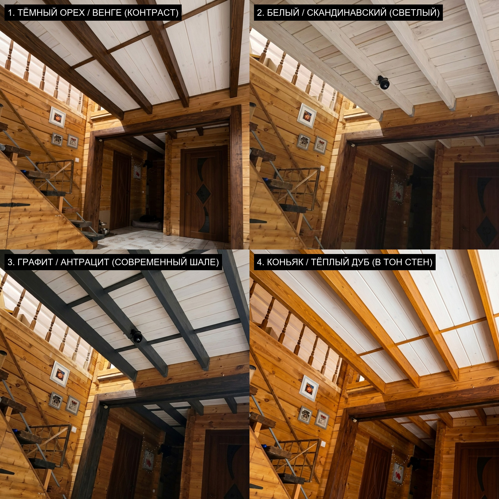
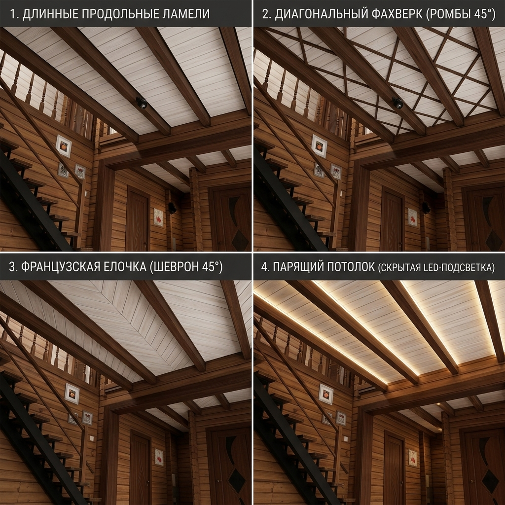
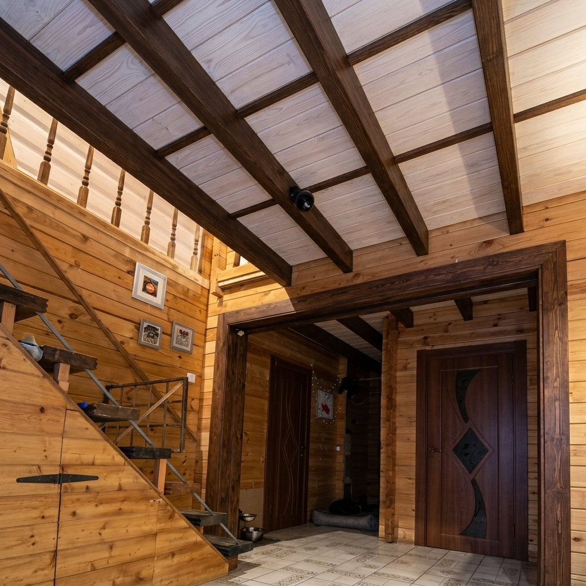
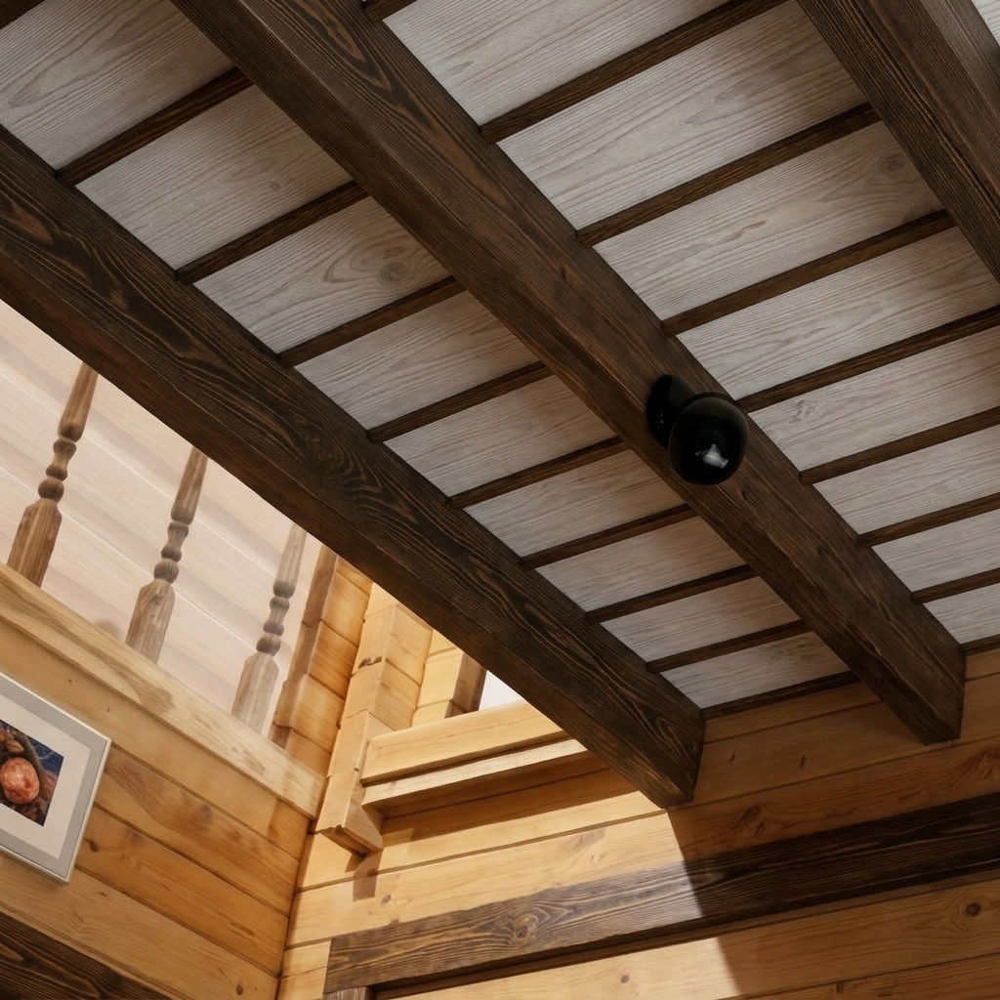

Во всех 4 вариантах доски лиственницы идут строго параллельно балкам (продольно), а поперечные реечки имеют толщину 2 см.
1. Тёмный орех / Венге (контраст под наличник) |
2. Белый / Скандинавский (монохром, максимум света)
3. Графит / Антрацит (современный шале) |
4. Коньяк / Тёплый дуб (гармония со стенами)

1. Длинные продольные ламели (цельные длинные доски вдоль балок, без поперечной нарезки) |
2. Диагональный фахверк (ромбы 45° рейками 2х2 см)
3. Французская ёлочка (шеврон 45° между балками) |
4. Парящий потолок (скрытая тёплая светодиодная подсветка в пазах балок)

Лиственница под белым воском набита вдоль балок длинными непрерывными ламелями.
Поперечные досочки сделаны изящными тонкими рейками толщиной ровно 2 см (20 мм) в тон тёмных балок.
Оригинальный тёмный дверной портал, лестница, брусовые стены и плитка сохранены на 100%.

Вагонка с белой патиной набита вдоль балок с заглублением на 10 см. Примыкание к темной балке выполнено с чистым теневым зазором (3–5 мм) без уголков и нащельников.
Эффект: Строгая минималистичная графика. Потолок кажется парящим между массивными балками. Самый технологичный и чистый вариант монтажа.
По периметру каждого межбалочного отсека в угол между белой вагонкой и темной балкой устанавливается темный тонкий брусок/раскладка (сечением 15х15 или 20х20 мм) в тон балок.
Эффект: Идеально скрывает мелкие неровности реза вагонки, создает законченную рамку кессонного типа («картина в раме»).
Между основными балками с шагом 80–120 см врезаются поперечные темные рейки меньшей высоты (выступ 4–5 см). Вагонка лежит продольно внутри получившихся прямоугольных карт.
Эффект: Полноценный английский/альпийский кессонный потолок. Разбивает длинный коридор межбалочного пространства на ритмичные квадраты.
Вдоль деревянной стены пущен профилированный карнизный брус в тон дверного проема, на который опираются торцы продольной вагонки.
Эффект: Четко отделяет плоскость стены от потолка, связывает воедино портал проема, лестницу и потолочные балки в единый архитектурный ансамбль.